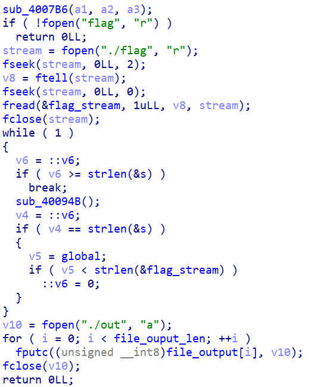
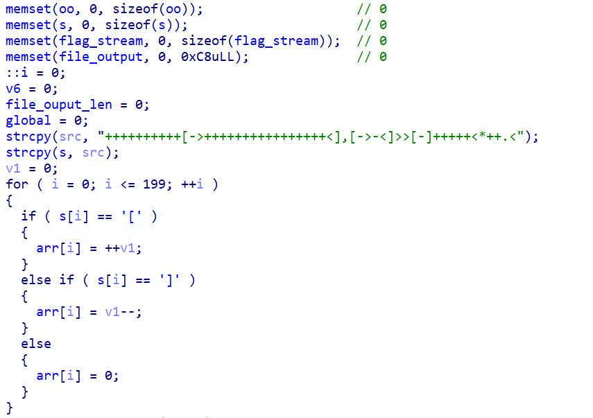
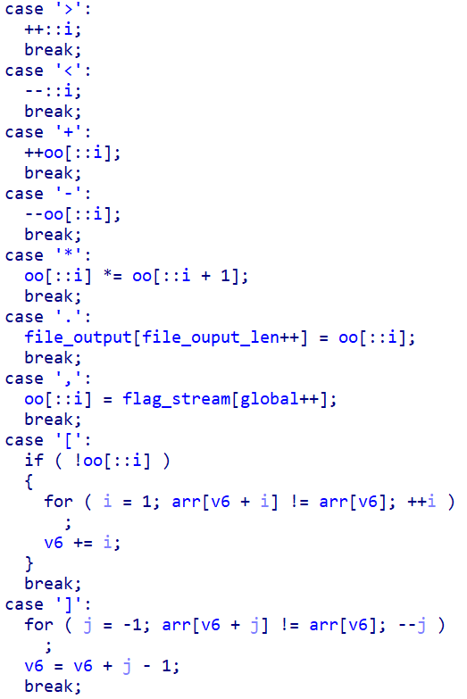
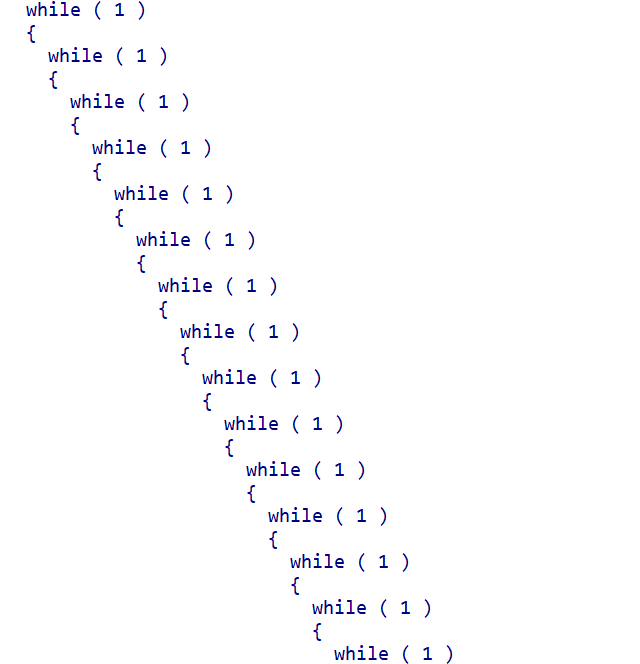
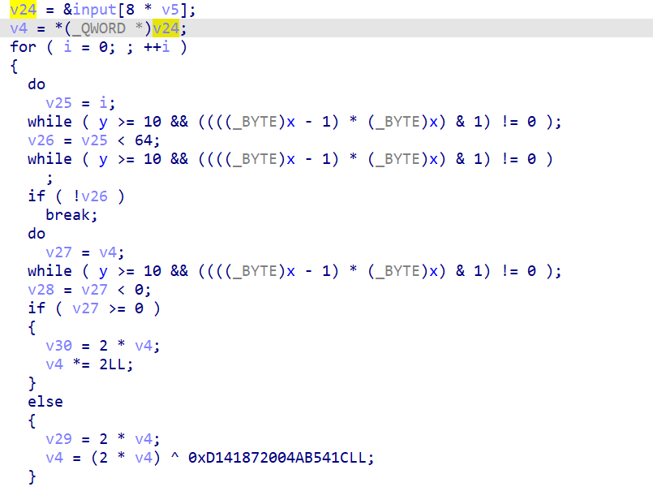

包括逆向的Press，XOR_Exercise。
Press
解题流程
- 主函数是将含有flag的文件打开，将其中的数据处理后放到out文件中，每处理一个字节，执行一次while循环，遍历处理每个字节：
 - 进入sub_4007B6函数,把一串字符赋给了s，然后又根据s的内容，生成了arr，给’[‘’]’标记上1：
 - 进入sub_400094B函数，分析后可以发现，
‘>’’<’控制索引，也就是控制i指向的位置向右或向左移动；
‘+’’-‘控制索引指向的元素加或减；
‘,’是取待处理的flag文件里的字节；
‘.’是将处理完的字节放到缓冲区中;
‘[‘’]’会生成一个循环，根据i指向的元素是否为0来判断是否继续循环：
 ++++++++++[->++++++++++++++++<],[->-<]>>[-]+++++<*++.<翻译过来的意思是：
给索引0号位+10；
然后遇到[]算是一个循环，0号位（i=0）控制循环次数，1号位是变量，每次给0号位-1，同时给1号位加16（这里的结果就是0号位为0，1号位+160）；
取出字节放到0号位；
第二个循环，结果是0号位为0，1号位-字节；
第三个循环将2号位的内容清空，然后加5（结果是2号位为5）；
1号位*=2号位，1号位+=2;
放入1号位的内容到缓冲区中。- 对4的总结就是：
1号位=(1号位+160-字节)*5+2解题脚本
1
2
3
4
5
6
7
8
9
10
11
12
13
14
15
16
17
18
19
20
21
22
23
24
25
26
27
28
29
30
31
32
33
34
35
int main()
{
char out[] = "60E12F0579805EE1C5578BCC5C9A67261E19AF933F09E297997B86C12587D60CDDCF2AF5650E73591D5FA4F46568D13DD2985DFE5BEF5BCC";
for (int i = 0; i < strlen(out); i += 2)
{
printf("0x%c%c, ", out[i], out[i + 1]);
}
unsigned char out_chars[] = { 0x60, 0xE1, 0x2F, 0x05, 0x79, 0x80, 0x5E, 0xE1, 0xC5, 0x57, 0x8B, 0xCC,
0x5C, 0x9A, 0x67, 0x26, 0x1E, 0x19, 0xAF, 0x93, 0x3F, 0x09, 0xE2, 0x97, 0x99, 0x7B, 0x86,
0xC1, 0x25, 0x87, 0xD6, 0x0C, 0xDD, 0xCF, 0x2A, 0xF5, 0x65, 0x0E, 0x73, 0x59, 0x1D, 0x5F,
0xA4, 0xF4, 0x65, 0x68, 0xD1, 0x3D, 0xD2, 0x98, 0x5D, 0xFE, 0x5B, 0xEF, 0x5B, 0xCC };
printf("\n");
unsigned char t = 0;
unsigned char tPrev = 0;
for (int i = 0; i < 56; i++)
{
tPrev = t;
for (int c = 0x20; c < 0x7F; c++)
{
t = tPrev;
t += 160 - c;
t *= 5;
t += 2;
if (t == out_chars[i])
{
printf("%c", c);
break;
}
}
}
//base64decode:flag{de0bd67e-6d25-87d7-1876-ad131a6165cb}
}XOR_Exercise
解题流程
听说是CRC64。
ollvm建议用这个脚本https://github.com/cq674350529/deflat，$python3 deflat.py -f xor_exercise--addr 0x401170：

这部分是关键，可逆（里面异或的对象0xD141872004AB541C来自旧的附件，新的应该是0xB1234B7679FC4B3D）：
解题脚本
1
2
3
4
5
6
7
8
9
10
11
12
13
14cmp = [0x32E9A65483CC9671, 0xEC92A986A4AF329C, 0x96C8259BC2AC4673,
0x74BF5DCA4423530F, 0x59D78EF8FDCBFAB1,0xA65257E5B13942B1]
for i in range(6):
for j in range(64):
if (int(cmp[i])&1)==1:
cmp[i] ^= 0xB1234B7679FC4B3D
cmp[i] = cmp[i]>>1
cmp[i] |= 0x8000000000000000
else:
cmp[i] = cmp[i]>>1
for i in range(6):
print(hex(cmp[i]), end=',')1
2
3
4
5
6
7
8
int main()
{
__int64 flag[] = { 0x7b726f46676e6153,0x68486c4f4d357564,0x6c7a52677a534e47,
0x504e4a615576766b,0x6132495f6a6d4e47,0x7d};
printf("%s", (char*)flag);
}